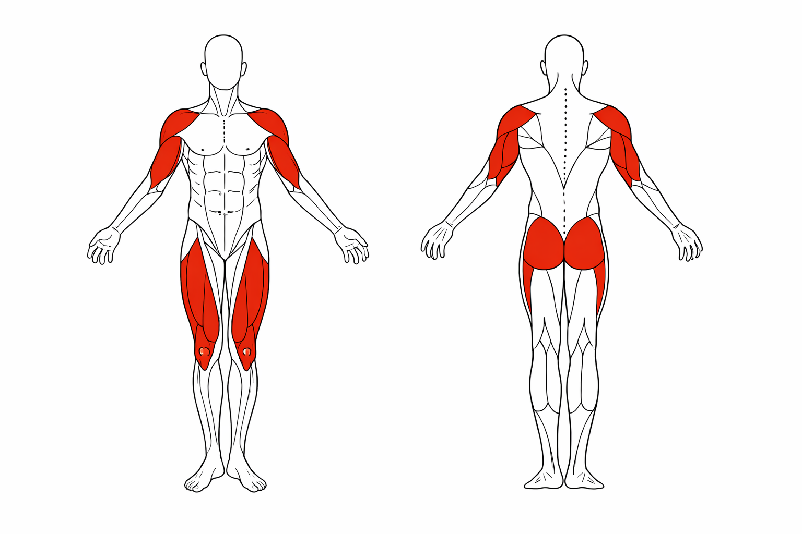
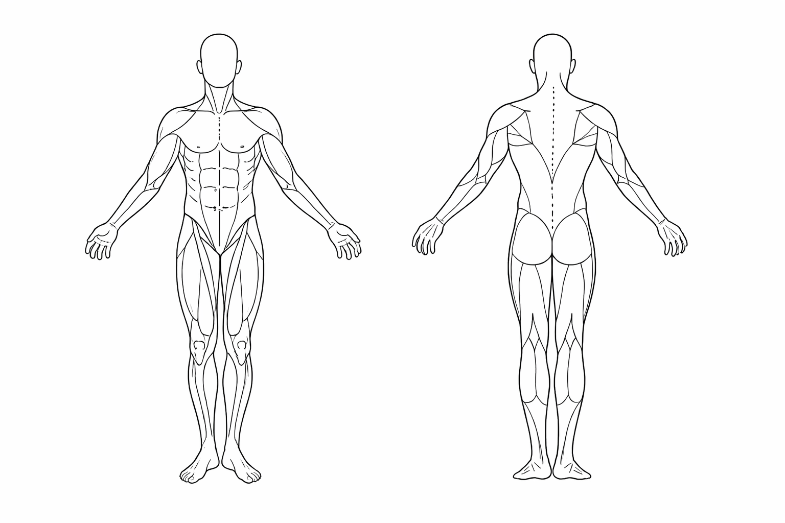
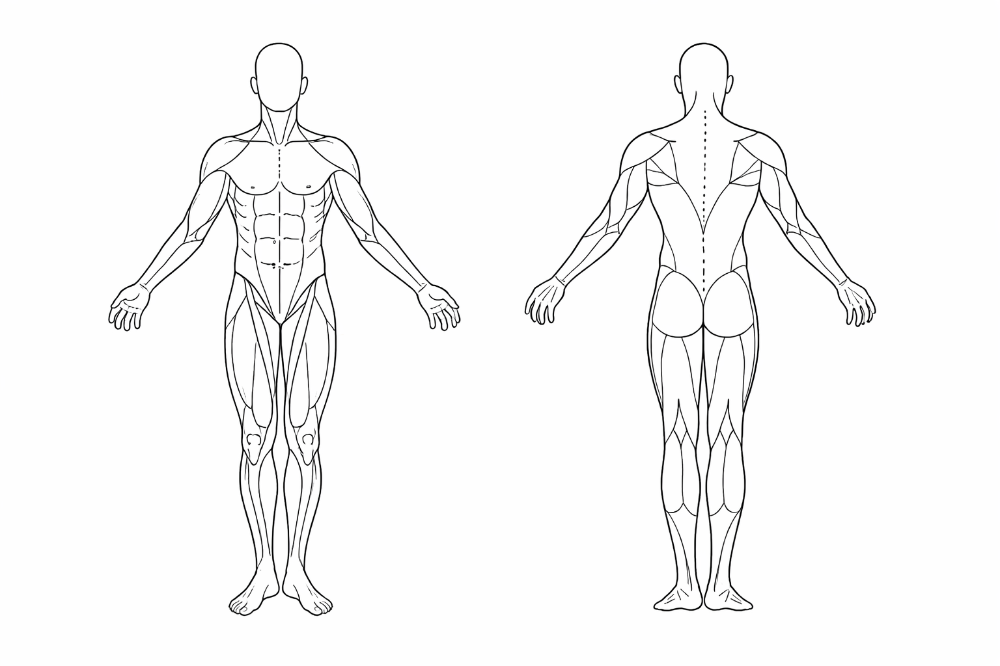
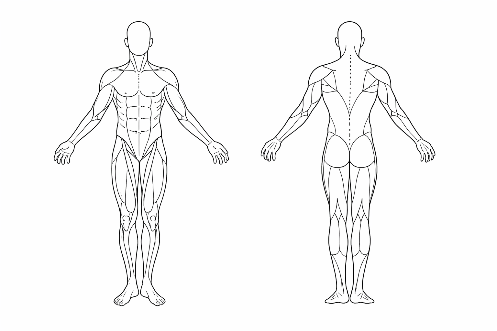
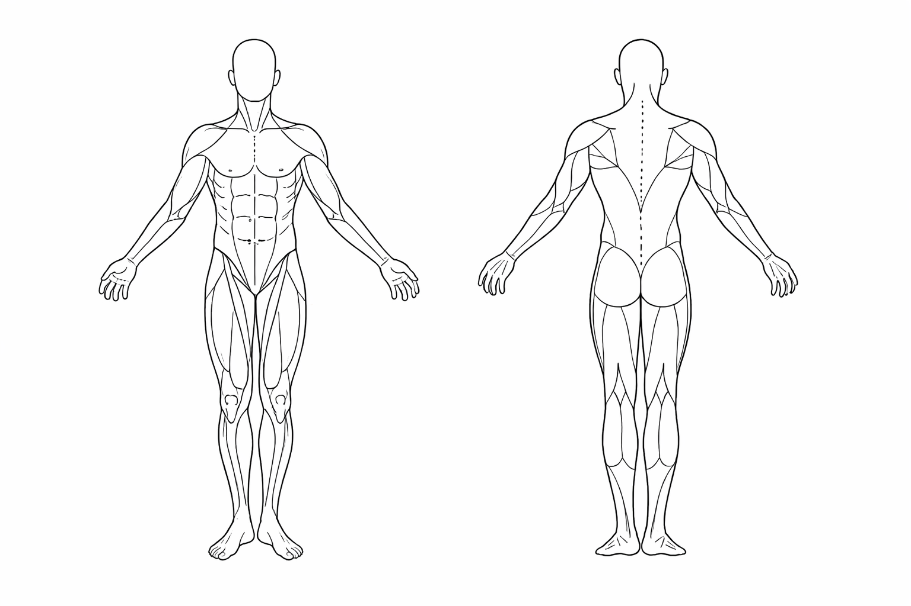
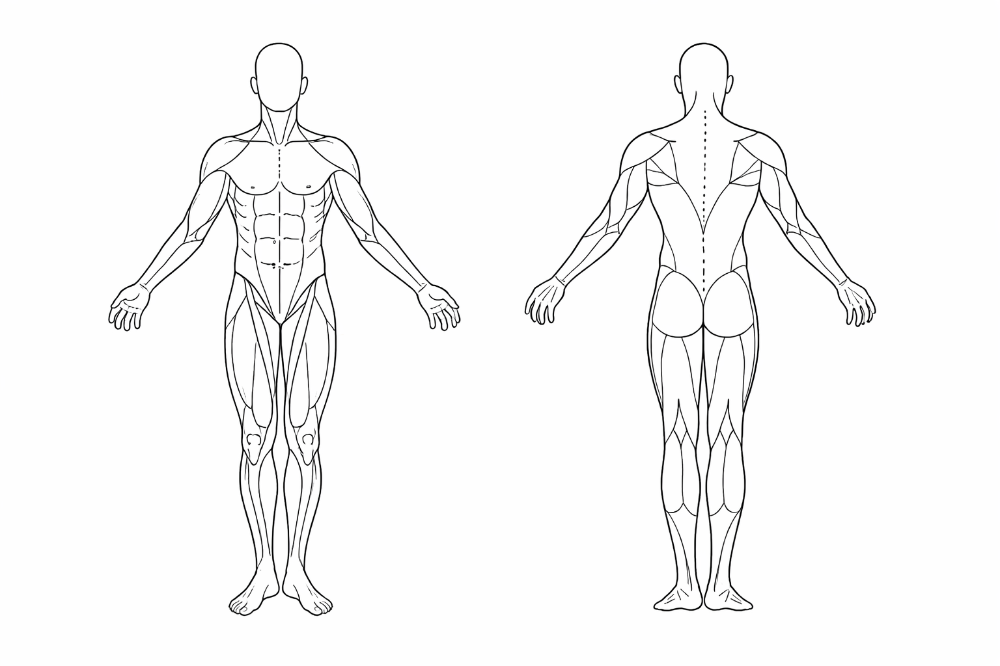
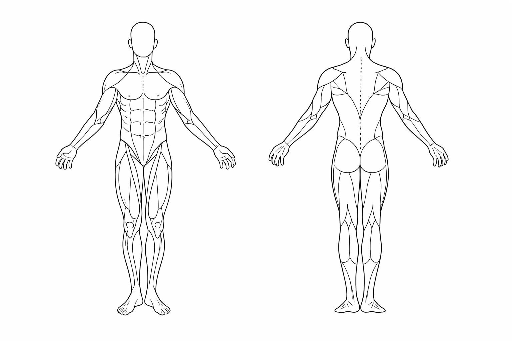
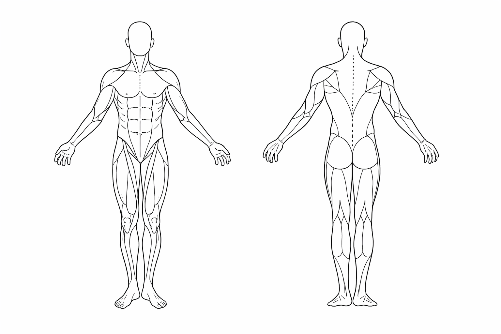
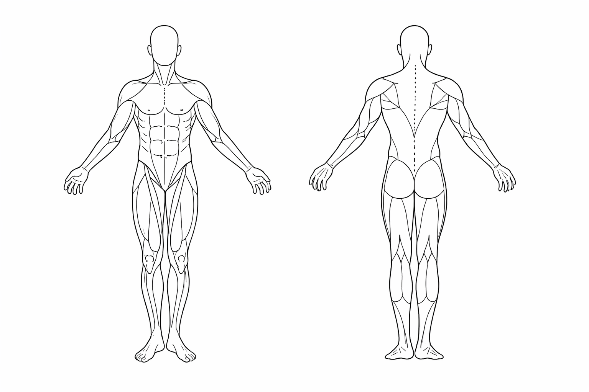

Ejercicio 1
Sentadilla + elevación hombros


Inicio: de pie, espalda recta, brazos a lo largo del cuerpo con las mancuernas en las manos.
- Coloque los pies a la altura de los hombros, doble las rodillas y lleve la pelvis hacia atrás como si se fuera a sentar en una silla.
- La rodilla no debe sobrepasar la punta del pie.
- Mantenga la espalda recta y la mirada al frente para evitar lesiones.
- A la vez que dobla las rodillas, aproximadamente 90 grados, flexione los codos.
- Posteriormente, estire las rodillas a la vez que sube las pesas en dirección al techo.
Volver arriba
Ejercicio 2
Agarre remo centrado


Inicio: un pie más adelantado que el otro, espalda recta, brazos estirados hacia delante sujetando la banda elástica.
- Tire con ambas manos simultáneamente llevando los codos hacia atrás, pegados al cuerpo y manteniendo los antebrazos paralelos al suelo.
- No encoja los hombros. Deben estar relajados.
- Evite desplazar el cuerpo hacia atrás durante el movimiento. La espalda debe estar recta.
Volver arriba
Ejercicio 3
Extensión codo con banda


Inicio: coloque un pie más adelantado que el otro, espalda recta, los codos doblados, banda elástica en las manos.
- Extienda los codos de modo que las manos queden pegadas al cuerpo.
- Solo mueva antebrazos (no brazos).
- La articulación que se mueve es el codo.
- Evite desplazar el cuerpo hacia atrás durante el movimiento.
Volver arriba
Ejercicio 4
Elevación de talones con pared

Inicio: de pie, mirada al frente.
- Agárrese con una mano al asa para no perder el equilibrio y con la otra mano coja una pesa.
- Coloque el pie derecho detrás del talón izquierdo.
- Levante lentamente el talón del pie izquierdo todo lo que pueda.
- Realice el mismo ejercicio con el pie contrario.
Volver arriba
Ejercicio 5
Flexión de codos


Inicio: un pie más adelantado que el otro, espalda recta, los brazos a lo largo del cuerpo agarrando la banda elástica con las manos.
- Sitúe los codos pegados al cuerpo.
- Doble/flexione ambos codos sin mover los brazos.
- No desplace la espalda hacia atrás.
Volver arriba
Ejercicio 6
Flexión manos separadas


Inicio: de pie, codos estirados, manos separadas la anchura de los hombros apoyadas en la pared a la altura del pecho y espalda recta.
- Flexione codos y dirija la cara hacia la pared.
- No proyecte los codos hacia fuera. Mantenga los codos próximos al cuerpo.
- Es importante que mantenga la espalda recta, evitando movimientos de la región lumbar.
- Cuanta más distancia haya entre los pies y la pared, más intenso será el ejercicio.
Volver arriba
Ejercicio 7
Sentadilla con pesa


Inicio: de pie, mirada al frente, brazos a lo largo del cuerpo con las mancuernas en las manos.
- Coloque los pies a la altura de los hombros, doble las rodillas y lleve la pelvis hacia atrás como si se fuera a sentar en una silla.
- No desplace las rodillas hacia delante cuando las flexione. La rodilla no debe sobrepasar la punta del pie.
- Mantenga la espalda recta y la mirada al frente (no doble la espalda) para evitar lesiones.
- Mantenga los brazos rectos en dirección al suelo.
- Cuando haya doblado las rodillas, aproximadamente 90 grados (o toque la silla), vuelva a la posición de inicio.
Volver arriba
Ejercicio 8
Flexión codo y elevación hombro

Inicio: un pie más adelantado que el otro, espalda recta, brazos a lo largo del cuerpo con las mancuernas en las manos.
- Paso 1: doble un codo sin mover el brazo.
- Paso 2: suba la pesa elevando el brazo en dirección al techo.
- Para volver a la posición de inicio se debe pasar por la posición del paso 1.
- Al finalizar el movimiento con un brazo, hágalo con el brazo contrario.
Volver arriba
Ejercicio 9
Apertura de brazos

Inicio: un pie más adelantado que el otro, espalda recta, codos flexionados, manos a la altura del pecho sujetando la banda elástica.
- Estire/extienda los codos y lleve ligeramente los brazos hacia atrás hasta que la goma contacte con el pecho.
Volver arriba
Ejercicio 10
Aproximación rodillas con pelota


Inicio: sentado en una silla, espalda recta, pelota situada entre las rodillas.
- Coloque los pies a la altura de los hombros y sitúe la pelota entre las rodillas.
- Sin mover los pies del suelo, cierre las rodillas de modo que apriete la pelota.
- Mantenga la contracción 5 segundos antes de volver a la posición de inicio.
Volver arriba
Ejercicio 11
Flexiones con manos juntas

Inicio: manos juntas apoyadas en la pared a la altura del esternón, espalda recta.
- Doble los codos hasta que la nariz quede próxima a la pared.
- No proyecte los codos hacia fuera. Los codos deben quedar próximos al cuerpo.
- Cuanta más distancia haya entre los pies y la pared, más intenso será el ejercicio.
- Es importante que mantenga la espalda recta, evitando movimientos de la región lumbar.
Volver arriba
Ejercicio 12
Separación rodillas con banda

Inicio: sentado, espalda recta, pies y rodillas juntas.
- Coloque la banda elástica alrededor de ambos muslos.
- Sin mover los pies del suelo, separe hasta donde pueda las rodillas.
Volver arriba